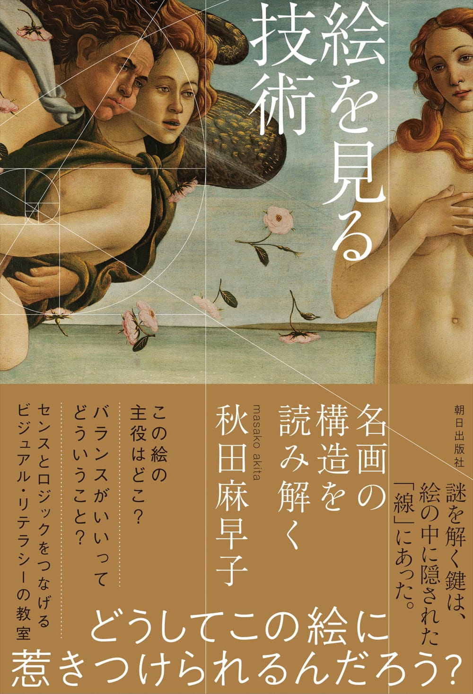
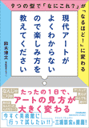
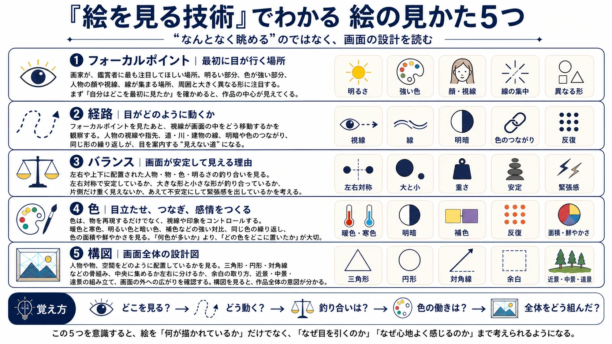
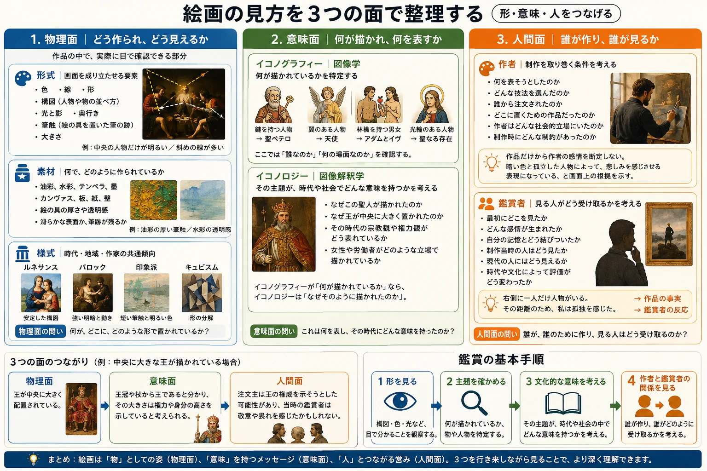
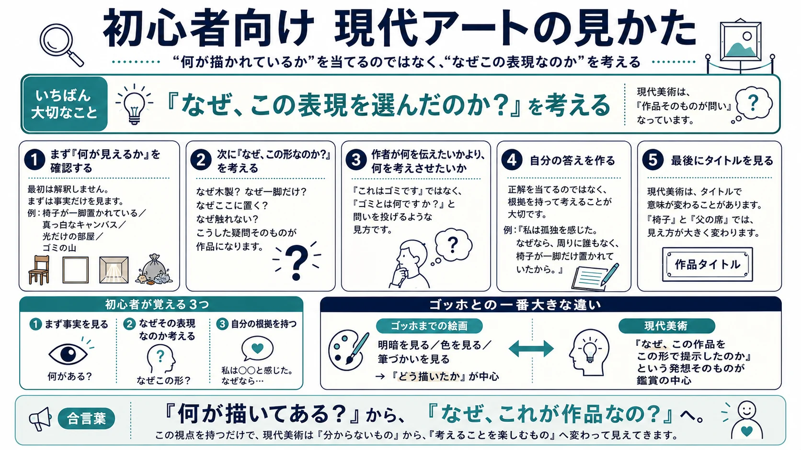
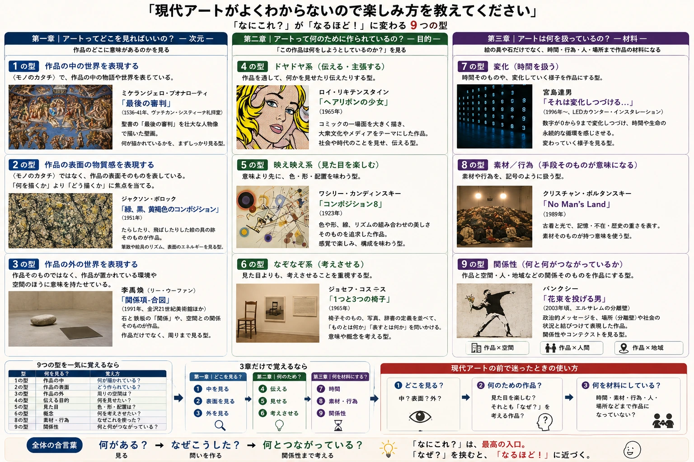

HOW TO LOOK
絵は、知るともっと見える。
まず画面を見る。意味を考える。現代アートなら「なぜ、これが作品なの？」まで進む。
知識を覚えるためではなく、美術館で立ち止まるための「見る道具」をまとめます。
TWO BOOKS
この2冊を読むだけで、絵の見え方が変わる。
自分が絵を見るようになった原点。

次に「なぜこれがアート？」を楽しむ
『現代アートがよくわからないので楽しみ方を教えてください』
上手い・きれいだけでは測れない現代アートを、「なぜこの表現なのか？」という問いから楽しむ入口にする本。
現代アート問い9つの型楽しみ方
Amazonで見る ↗※ Amazonへのリンクにはアフィリエイトリンクを含みます。
6 GUIDES
美術館で使う「見る道具」
画像を眺めるだけでなく、HTMLで読んで、そのまま作品の前で試す。

00 / LIVE
なぜ、生で絵を見るのか？
画像では作品を見る。実物では作品と同じ場所にいる。大きさ・距離・表面・空間・時間、そしてアウラから、生で見る価値を考える。
美術館へ行く理由を読む →
01 / BASIC
絵を見る技術｜5つの見かた
フォーカルポイント → 経路 → バランス → 色 → 構図。まず画面そのものを読む。
HTMLで読む →
02 / FRAMEWORK
絵画を3つの面で見る
物理面・意味面・人間面。見えている形から、意味と人の関係までつなげる。
HTMLで読む →
03 / CONTEMPORARY
初心者向け 現代アートの見かた
「何が見える？」→「なぜこの形？」→「私はどう考える？」。正解探しをやめる5ステップ。
HTMLで読む →
04 / 9 TYPES
現代アートを9つの型で見る
作品の中・表面・外、伝える・見せる・考えさせる、時間・素材・関係性。迷ったときの分類表。
HTMLで読む →
05 / MUSEUM
美術館、初心者あるある。
床の線、ミュージアムショップ、単眼鏡。美術館で一度は迷うことを、笑いながら答え合わせ。
59の初心者あるあるを見る →START HERE
迷ったら、この順番。
- 1形を見る色・線・構図・素材
- 2意味を確かめる何が描かれている？
- 3人と時代を見る誰が、誰のために？
- 4現代アートなら「なぜ？」なぜこの形・素材・場所？